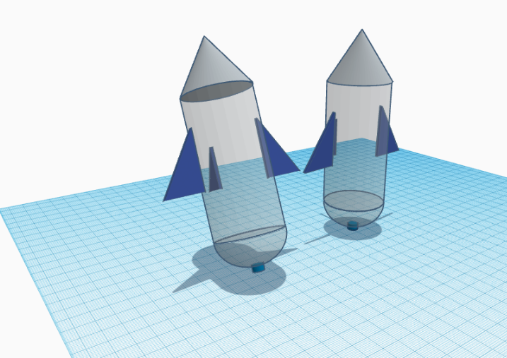
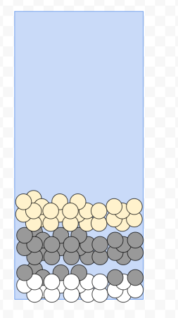
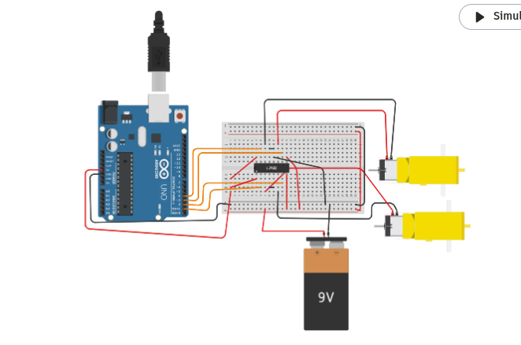
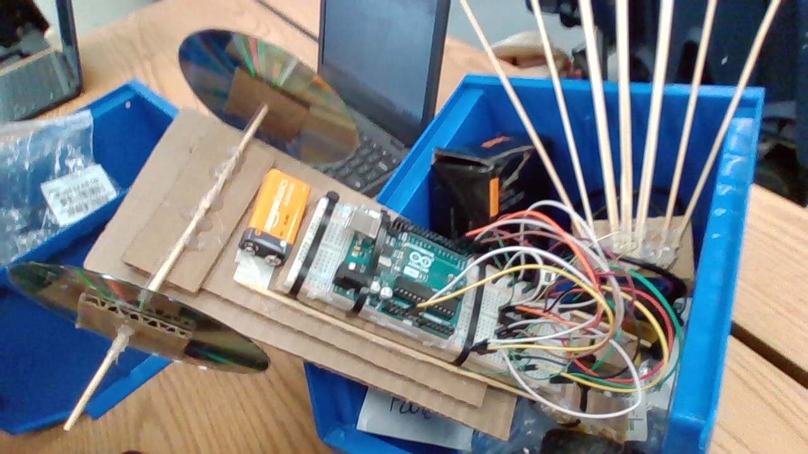

8/25/23 - This week I made this website and leared how to upload it to the internet. I learned about the saftey precautions and engineering steps. We tried to roll a marble into a cup. I dont know what I am doing this weekend.
My Favorite Recipe
9/1/23 - This week I learned engineering discipline and that you must be safe during dangerous processes. I was at a wedding this week and missed the challenge. I ate good food.

9/8/23 - My week went well. I learned about CAD and designed things. My rube goldberg machine will pop a balloon. The most challenging parts is the construction of the machine.

9/15/23 - This week we finished our project. It took a few tries for it to work successfully but overall it was good. We had multiple different challenges includng the car which would get stuck frequently. But overall it was a good chalenge and was fun.
9/22/23 - This week we did multiple challenges. We made a boat. We also cut out E shapes in paper and had to accuratley follow measurments.
9/28/23 - This week I learned about computer engineering. I learned about components of computers and got to take one apart. It was very informative and I learned alot about how computers fuctions and how the individual parts work together.
9/28/23 - I learned that there is different types of bioengineering, I also learned that bioengineering is made up of alot of different types of engineering. Our hand project was a very fun project, we were successful in making a prosthetic hand using strings and rubber bands. If I were to make the hand again I would add more fingers.
10/13/23 - We learned about aerospace engineering. Four forces on a flying object are weight, life, thrust and drag. This class is very fun! BOM

10/20/23 - I learned alot about aerospace engineering this week. I learned about the different types of aerospace engineering and the four forces on a aircraft. My bottle rocket was designed poorly, the wings were backwards and the railing was not attached well.
10/26/23 - This week we learned about enviromental engineering and the enviroment. We made water filters that replicate real life water filtration systems. Our water filtration system worked well and filtered dirty water into somewhat clean water. This threeday weekend I am going to relax.

11/3/23 - This week I learned about electrical components as well as circuits. It was very interesting to create electrical circuits in tinkercad. Three fun facts are that electricity runs at the speed of light. Another thing I learned is that you have to use math when you're picking the resistance of a resistor. Finally, a fun fact is that the inventor of electrical engineering is James Clerk Maxwell.

11/9/23 - Over the last 2 weeks i learned alot about electrical engineering and constructing electrical cicuits.
1/26/24 - We made non-newtonian fluid and it was really cool. We also started making a arduino car in tinkercad here is a pic:
2/5/24 - We started constructing the physical car and got the wheels spinning on the breadboard. We also did a lot of soldering of the wires. My goal is to have completed the actual circuit by friday so we can begin construction of the base. Fun fact about my weekend is that I had was chilling.
2/13/24 - This week we finished assembling all the components of the car. We completed the body and wheels. This upcoming week we are going to fine tune the car and make it as good as possible.
2/26/24 - Our car did well, it drove decent but the wheels were uneven causing it to turn right. IF i were to remake it I could make the body better and cleaner.

3/13/24 - Our design worked very well and the egg was highly safe inside the apparatus.